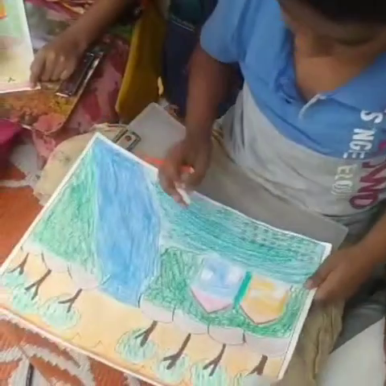
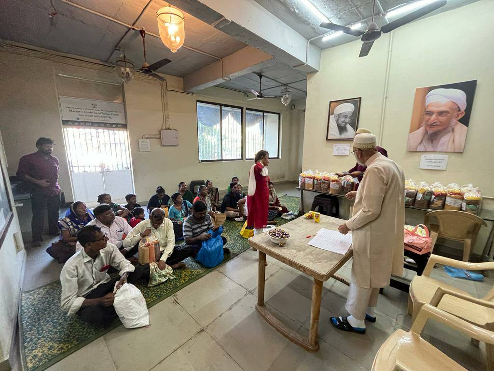
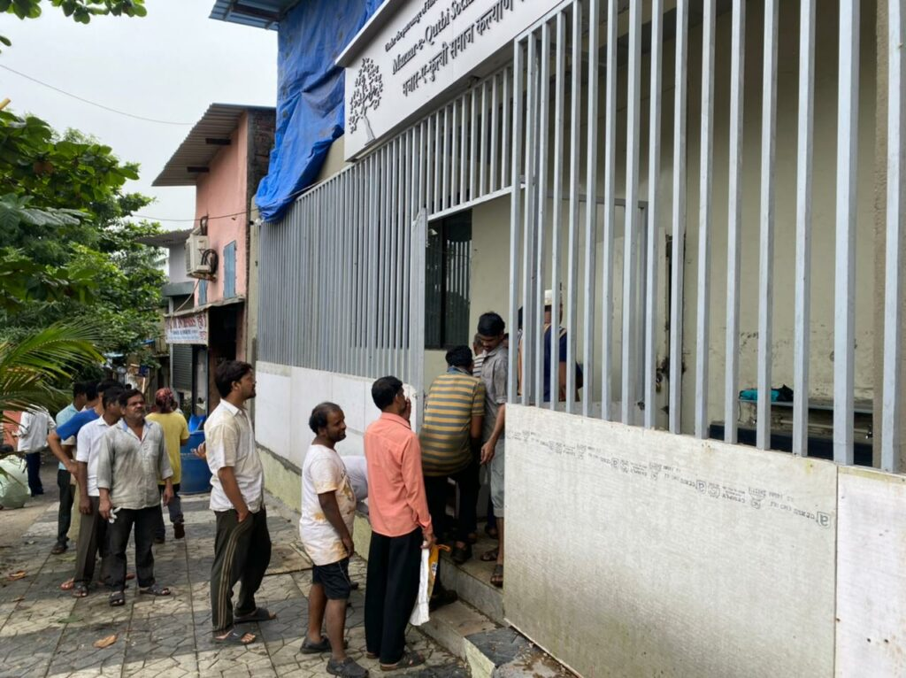

On Friday, 21st Ramadan 1443H (22nd April 2022), Syedna Taher Fakhruddin TUS inaugurated the new site, a two-storey, Zahra Hasanaat Mazaar-e-Qutbi Welfare Center adjacent to Raudat-un-Noor, Roza Mubarak of Syedna Khuzaima Qutbuddin RA.
The Zahra Hasanaat Mazaar-e-Qutbi Welfare Center is a place for families of all faiths and creeds to receive food, classes and other support. The center hosts Niyaaz Jaman, children’s tuition classes, women’s vocational training, sewing classes, computer classes and many more activities which will be started soon insha’Allah.
Shehzada Dr. Aziz Bhaisaheb Qutbuddin arazed in his inauguration speech that, on the Mubarak day of the 21st of Ramadan, the day of Wafaat of Amirul Mumineen, Maulana Ali AS, who would feed all the people of Kufa during Shehrullah, Syedna TUS inaugurated the Mazaar-e-Qutbi welfare center where people are invited for Niyaaz. He also said that when Raudat-un-Noor was inaugurated, Syedna TUS stated that because of this opening (Iftitah), the doors of Barakaat would be opened up. Each victory (Fateh) will be followed by a victory (Fateh).
Syedna TUS bestowed pearls of doa and said that our Niyat is the Niyat of Qutbuddin Maula RA: to do khair-khuwahi of ibaadullah. Syedna TUS encourages Mumineen to be helpful to all of God’s children, Rasullulah SA said,“All humans are children of God, and God loves him who helps his children.”



Current Activities:
Daily Vegetarian meals: Every lunchtime at the Mazaar-e-Qutbi Social Welfare Center over 250 meals are served to whoever wishes to enter and eat there. The meals are healthy and wholesome vegetarian food in order to accommodate all persons of various religious and cultural backgrounds. The entire Niyaz operation is managed and run by dedicated volunteers with a strong focus on serving wholesome and nutritious food with good quality ingredients and sanitary cooking and service. At the same time to ensure that funds are utilized effectively, tight controls on sourcing and preparation of the niyaaz is done. For a detailed report please visit mazaar-e-qutbi.org.
Tuition classes: Over 50 children from the local area also come for tuition classes, meals and snacks after their school. The Mazaar-e-Qutbi Social Welfare Center provides a safe space where they can study, learn English, eat wholesome food and also borrow books from the small library. Classes are interactive and aim at always creating a happy, fun atmosphere in which all children can enjoy and feel at home.
Stitching classes: Nearly 50 women are also currently enrolled in the vocational tailor training at the Mazaar-e-Qutbi Welfare Center. They are taught basic stitching skills which will help them work from home and earn a living. Plans are in the works to start a workshop in which jobs facilitated by the committee will be done by those who have received the training. May we work according to the guidance and wish of Syedna TUS for the welfare of ibaadullah.
The Mazaar-e-Qutbi Welfare Center management committee is in process of expanding operations and hopes to positively impact many more families in the future. Contact +91 786 786 5354 or info@fatemidawat.com for more information about Zahra Hasanaat and the Mazaar-e-Qutbi Welfare Center.
- Medical camp for preventive health
- Subsidized Health Insurance
- Computer classes
- Carpentry and other vocational training classes
- Food Ration distribution
- Clothes
- Toys and Books
- Library and Playground development for children
- English Classes
- School scholarships
- Martial Arts Training and other Physical Wellness Activities
Mumineen can participate in the khidmat of niyaaz and also contribute regularly to join in the sawaab of Mazaar-e-Qutbi Niyaaz. Cost is approximately Rs. 30 per meal.